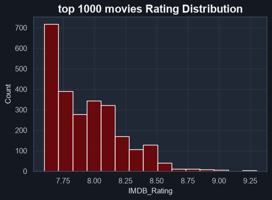
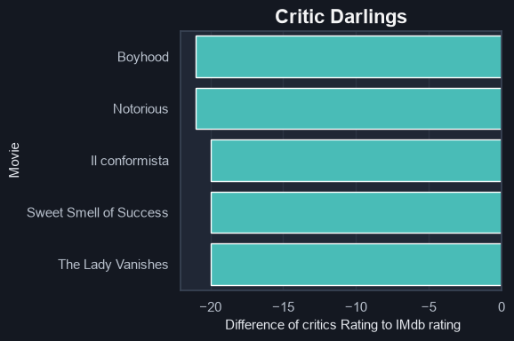
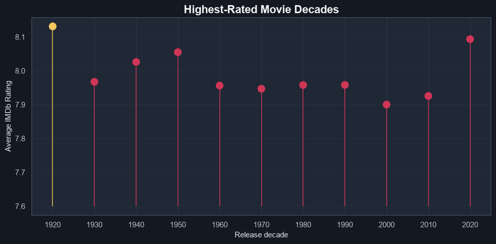
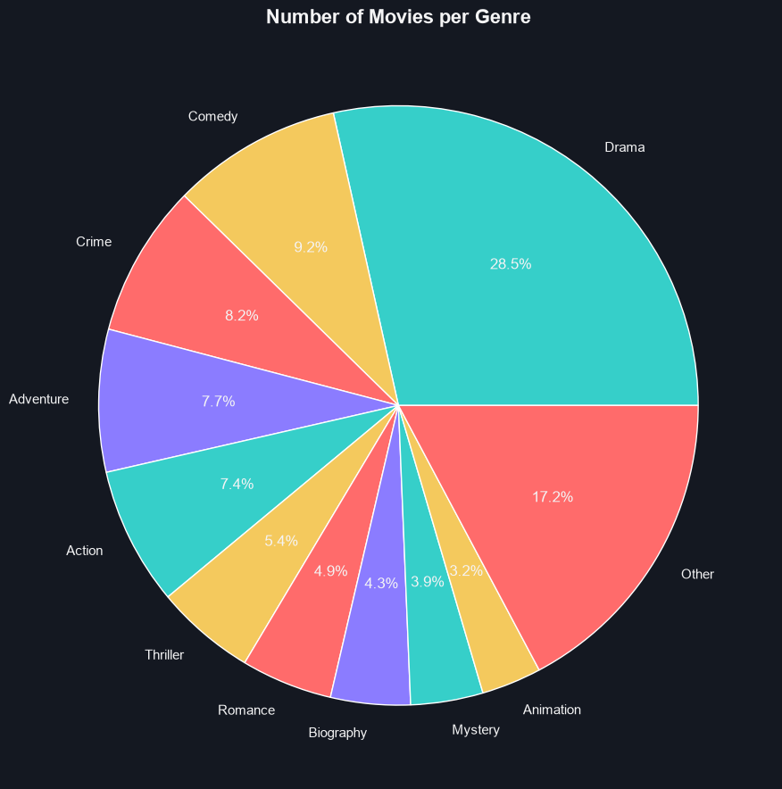
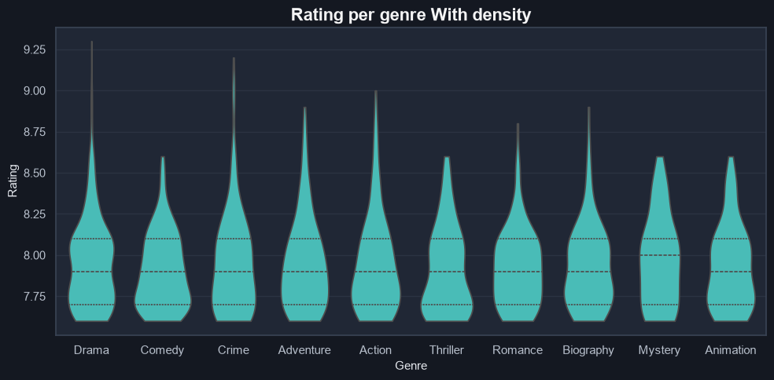
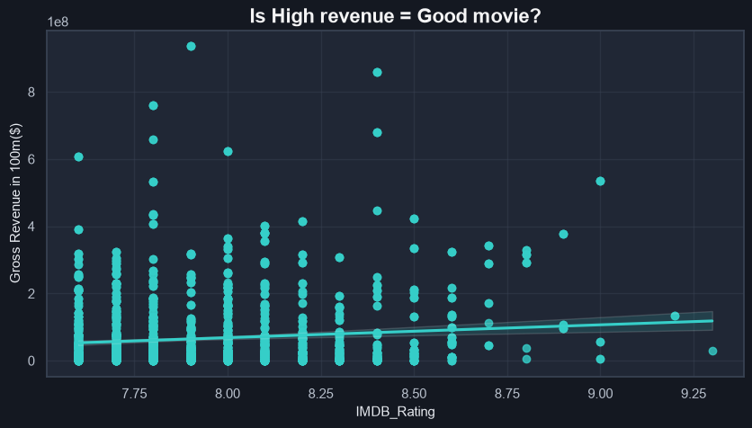

- Movies Analyyzed
998 - Average Rating:
7.95 - Average Box Office:
$66246320 - Released:
1920 - 2020
this portion will display the rating distribution chart to analyze how the ratings of the movies are distributed in the dataset


this portion will display the comparison between audience and critic ratings, First graphs Shows the plotting of each movie based on their respective ratings.

 As you can see here the difference
between audience and critic ratings is in postive becuase The formuala used is (Audience Rating - Critic
Rating) so these are movies where the audience rated them higher than the critics.
As you can see here the difference
between audience and critic ratings is in postive becuase The formuala used is (Audience Rating - Critic
Rating) so these are movies where the audience rated them higher than the critics.
For this graph, we can observe that difference is negative.so according to the formula (Audience Rating - Critic Rating), these are movies where the critics rated them higher than the audience.
this portion will display the genre-wise analysis of the movies in the dataset


this graph shows rating across genres with density using voilin graph. as you can see Drama genre has the highest rating but its density is high at somewhere around 7.75 and 8.1 on the other hand mystery genre has more stable shape